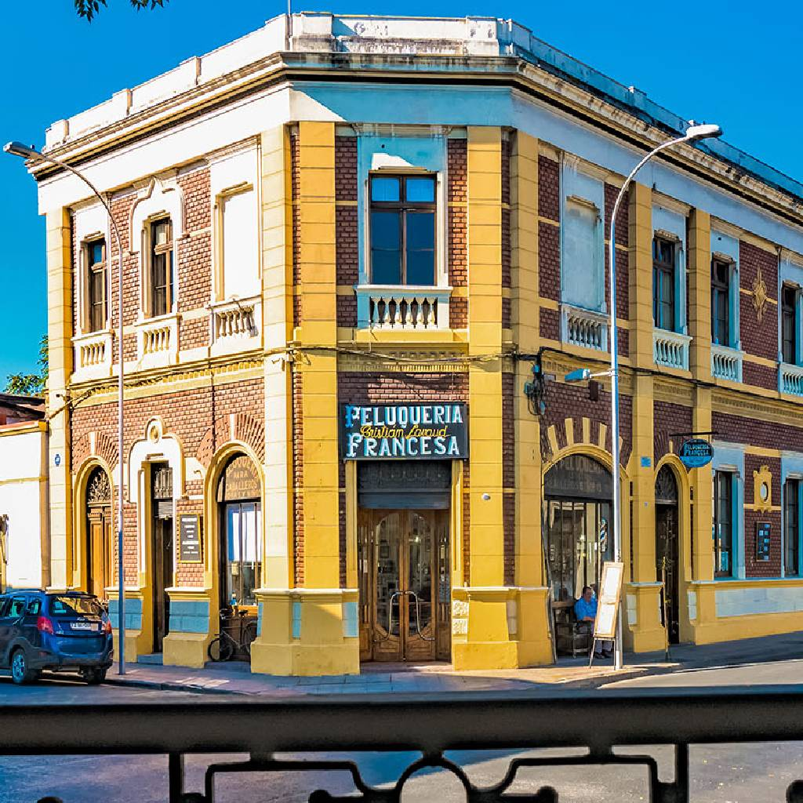
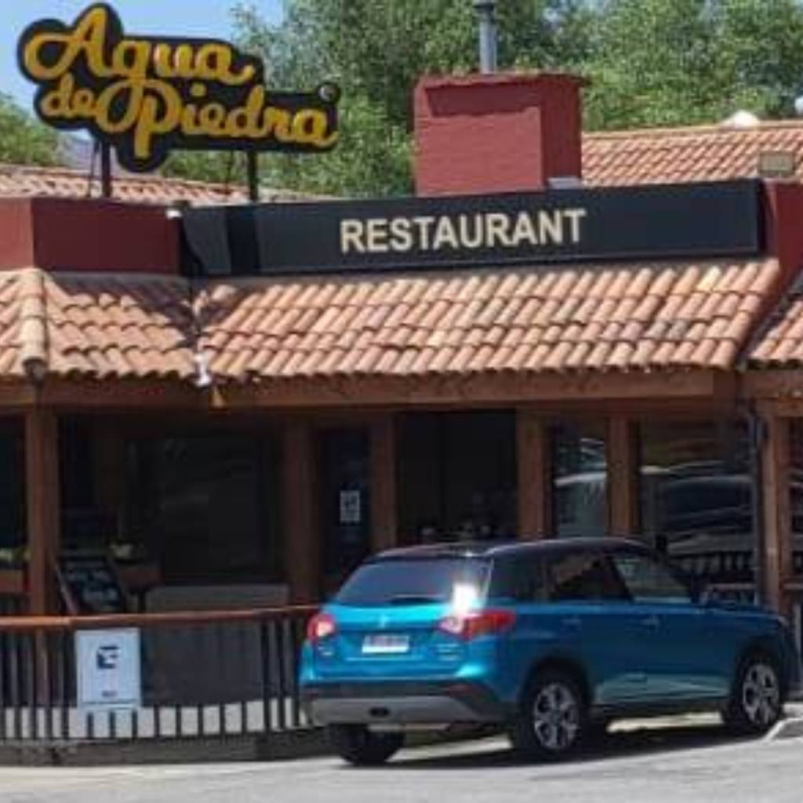

Huella Artesanal, elaborada con Agua de Vertiente en Farellones.
Puntos de VentaEn Agualarga, el corazón de nuestra cerveza late en Farellones. Aquí, en la majestuosidad de la montaña, nace nuestra cerveza artesanal, infundida con la pureza inigualable del "Agua de Vertiente" natural.
Este origen único nos permite ofrecerte variedades con un sabor auténtico, reflejo de nuestra pasión familiar y fidelidad a la calidad. Creemos en la artesanía, la innovación y la satisfacción de quienes buscan una experiencia cervecera memorable.
Descubre el carácter de cada una de nuestras creaciones.
Disfruta Agualarga en estos exclusivos lugares:

Bar Restaurante histórico en el corazón del Barrio Yungay.
Dirección: Compañía de Jesús 2789, Santiago.
Reservas: +56 9 7798 9743

Tradición y comida casera en Curacaví.
Dirección: Ruta 68 km 55, Curacaví.
Reservas: +56 2 2835 1122
Formado en EEUU, Argentina e Irlanda, Sergio es el alquimista detrás de Agualarga. Su viaje comenzó en 2012 y se perfeccionó explorando los lúpulos argentinos y la tradición stout irlandesa.
Cada receta es un homenaje a sus viajes y aprendizajes, buscando siempre el equilibrio perfecto entre la tradición europea y el espíritu indómito de los Andes chilenos.
¿Quieres saber más sobre nuestra producción familiar?